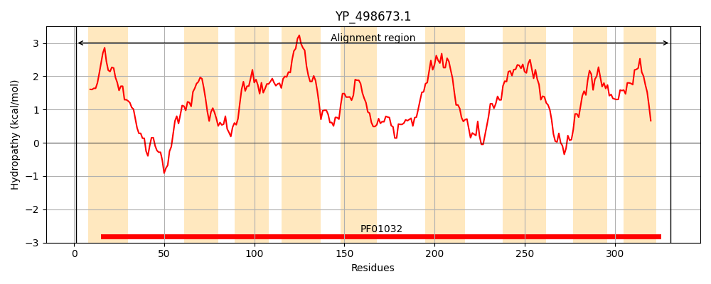
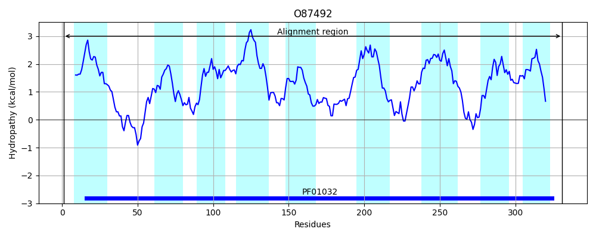
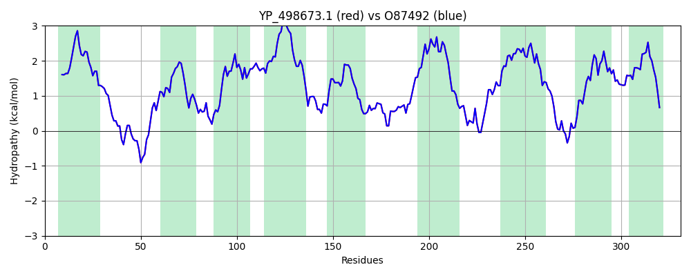

Hit Accession: O87492
Hit TCID: 3.A.1.14.28
Hit Description: gnl|BL_ORD_ID|7704 gnl|TC-DB|O87492|3.A.1.14.28 Iron ABC transporter permease OS=Staphylococcus aureus OX=1280 GN=sirB PE=3 SV=1
Mach Len: 331
e:0.000000
Query TMS Count : 9
Hit TMS Count: 9
TMS-Overlap Score: 9.700000
Predicted Substrates:None
BLAST Alignment:
Score: 1603 , Bit scores: 622 bits, E-value: 0.0e+00, Alignment length: 331, Percentage identity: 100
Query: 1 MLLKPKYQIVIAGLCLAIVAILSLMIGNTLVSPGTVIQALFNFDSENDLHDVVTGARASRTIIALLTGAALAVSGLLMQALTRNPIASPGLFGVNAGAVFFVIFSITFIQIQSFKMIVVIAFLGAIVVTVLVVALGMFRQTLFSPHRVILAGAAIAMLFTAFTQGILIMNETDLQGLLFWLSGSVSLRNIWDIPWIIPLVLILILIAFSMAAHINILMTSDDIATGLGQNIKLIKWMIIMLISMLAGISVAVAGSIVFVGLIVPNISKRLLPPNYKYLIPFTALAGAILMIISDIVARIIIKPLELPIGVVTAVIGAIVLIYIMKKGRQRL 331
MLLKPKYQIVIAGLCLAIVAILSLMIGNTLVSPGTVIQALFNFDSENDLHDVVTGARASRTIIALLTGAALAVSGLLMQALTRNPIASPGLFGVNAGAVFFVIFSITFIQIQSFKMIVVIAFLGAIVVTVLVVALGMFRQTLFSPHRVILAGAAIAMLFTAFTQGILIMNETDLQGLLFWLSGSVSLRNIWDIPWIIPLVLILILIAFSMAAHINILMTSDDIATGLGQNIKLIKWMIIMLISMLAGISVAVAGSIVFVGLIVPNISKRLLPPNYKYLIPFTALAGAILMIISDIVARIIIKPLELPIGVVTAVIGAIVLIYIMKKGRQRL
Sbjct: 1 MLLKPKYQIVIAGLCLAIVAILSLMIGNTLVSPGTVIQALFNFDSENDLHDVVTGARASRTIIALLTGAALAVSGLLMQALTRNPIASPGLFGVNAGAVFFVIFSITFIQIQSFKMIVVIAFLGAIVVTVLVVALGMFRQTLFSPHRVILAGAAIAMLFTAFTQGILIMNETDLQGLLFWLSGSVSLRNIWDIPWIIPLVLILILIAFSMAAHINILMTSDDIATGLGQNIKLIKWMIIMLISMLAGISVAVAGSIVFVGLIVPNISKRLLPPNYKYLIPFTALAGAILMIISDIVARIIIKPLELPIGVVTAVIGAIVLIYIMKKGRQRL 331 | Protein Hydropathy Plots: |
|---|
|  |  |
Pairwise Alignment-Hydropathy Plot:
|
|---|
|  |